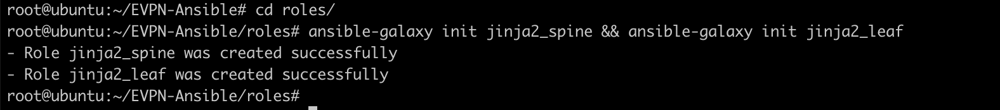
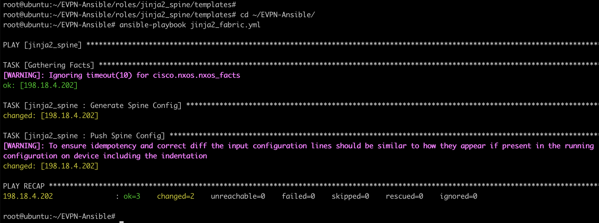
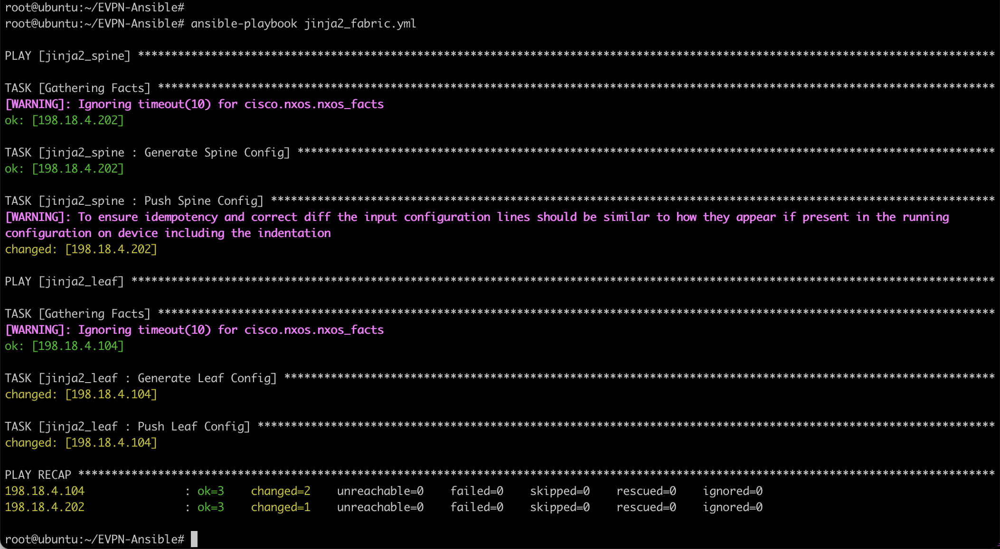

Task 3 - Use of Jinja2 templates with Ansible Playbook
In this section, we will use Jinja2 templating engine to create templates for spine and leaf switches. Use of Jinja template provide flexibility and agility. Jinja2 template will appear similar to the NXOS configurations. We abstract the variables out of the configuration and use simple for loop to feed variables into the template. This shows the power of using Jinja2 templating engine.
In this task, you will configure VXLAN fabric using this Jinja2 templates for one leaf (leaf-4) and one Spine (spine2) switch.

Step 1: Install jinja2
- On the Ansible node, install jinja2 using
pip install jinja2command below. If it is already installed, we will get the message “requirement is satisfied”:
pip install jinja2
Below screenshot shows the output of above command:
Step 2: Playbook for jinja2 Spine
In this step, we will use Jina2 template and Ansible to provision the VXLAN Fabric.
-
Switch to Atom, then Right Click on the folder
EVPN-Ansibleand ClickNew Fileto create a new playbook namedjinja2_fabric.ymlas shown below
-
Name the new file
jinja2_fabric.ymland hit enter as shown below. It will create this new file:

-
Also, on the lower bar of the Atom, verify that the language/grammar of YAML is selected instead of default "Plain Text". If YAML is not selected, then you should choose it from the listed options.
-
Now enter (copy and paste) below data in this playbook:
---
- hosts: jinja2_spine
connection: local
roles:
- jinja2_spine
The contents of the jinja2_fabric.yml file should look like below screenshot:

-
On Atom, you should Click
FileandSave. This will save the playbook, and also ftp the playbook to Ansible server using pre-configured “remote-sync” package -
On the MTPuTTy, go back to the ssh session of the Ansible Server node (198.18.134.150)
-
On Ansible server node (198.18.134.150), verify that the (below highlighted) 2 groups named
jinja2_spineandjinja2_leafexists in the inventory file name "hosts" (under EVPN-Ansible directory) exists by issuing below commands:
cd /root/EVPN-Ansible
more hosts
Below screenshot confirms the ouptut and appropriate IP addresses of above command:

Step 3: Create new roles and vars
In this section, we will create two new roles for provisioning Fabric with Jina2 template.
- On the MTPuTTy, go back to Ansible Server node (198.18.134.150). Switch to ‘roles’ directory and then create
‘jinja2_spine’and‘jinja2_leaf’roles usingansible-galaxy initas per below commands:
cd ~/EVPN-Ansible/
cd roles/
ansible-galaxy init jinja2_spine && ansible-galaxy init jinja2_leaf
-
Below screenshot shows the output of above command:

Note
‘ansible-galaxy’ will initialize the role structure and create necessary folders with default name like ‘tasks’, ‘template’, ‘vars’ etc.
- change directory path to
EVPN-Ansible/roles/jinja2_spineand check the content of local directory (ls) as per below commands:
cd ~/EVPN-Ansible/roles/jinja2_spine/
ls
-
Below screenshot shows the output of above file. Note that various directories including tasks, templates, vars exists. We will use these in later steps

Next:
- Create empty jinja2 template files for spine and leaf under templates folder for each role by running below commands:
cd ~/EVPN-Ansible/roles
touch jinja2_spine/templates/spine.j2
touch jinja2_leaf/templates/leaf.j2
- Switch to “Atom” and sync the new created folders between Ansible node and Remote desktop by pressing Right Click on the folder
EVPN-Ansible, then ClickRemote Sync, and SelectDownload Folderas shown in below screenshot:

- Once the download is complete, you should see the new folder (such as
roles) and all files appear on Atom as well.
Step 4: Create variable file for “jina2_spine” role
“ansible-galaxy” automatically creates empty “main.yml” file under “vars” folder. We can use “Atom” to edit this main.yml file to include the variables that will be used in jinja2 template.
-
Switch to Atom, then open up the project folder
EVPN-Ansiblefrom the left pane and Openmain.ymlfile under “roles/jinja2_spine/vars/” as shown below: -
use “Atom” to edit the “main.yml” file to include the below variables that will be used in jinja2 template. You can copy and paste all of the below to replace any existing content into
main.ymlfile.
Note
As per steps in previous tasks, be careful with content since its space sensitive.
---
# vars file for jinja2_spine
asn: 65000
bgp_neighbors:
- remote_as: 65000
neighbor: 192.168.0.8
update_source: Loopback0
- remote_as: 65000
neighbor: 192.168.0.10
update_source: Loopback0
- remote_as: 65000
neighbor: 192.168.0.11
update_source: Loopback0
L3_interfaces:
- interface: Ethernet 1/1
- interface: Ethernet 1/2
- interface: Ethernet 1/3
- interface: Ethernet 1/4
- interface: loopback 0
- interface: loopback 1
s1_loopback: 192.168.0.6
s2_loopback: 192.168.0.7
-
Contents of the ‘main.yml’ file should look like below screenshot:
-
Click
FileandSave. This will save the playbook, and also ftp the playbook to Ansible server using pre-configured “remote-sync” package.
Step 5: Create Jinja2 template for spine role
- On Atom, Select the project folder
EVPN-Ansiblefrom the left pane. Then under “roles/jinja2_spine/templates”, Openspine.j2file as shown in below screenshot:
Note
If the file does not appear on the ATOM, then go ahead and then execute steps outlined on this page to get it sync. If the spine.j2 file appears in above folder then can proceed below**
- use “Atom” to edit the “spine.j2” file for jinja2 template. You can copy and paste all of the below content into
spine.j2file.
Note
As per steps in previous tasks, be careful with content since its space sensitive.
feature bgp
feature nv overlay
feature vn-segment-vlan-based
nv overlay evpn
feature pim
!
router bgp {{ asn }}
router-id {{ router_id }}
address-family ipv4 unicast
address-family l2vpn evpn
retain route-target all
!
#for loop to configure bgp neighbor for each leaf
{% for neighbor in bgp_neighbors %}
neighbor {{ neighbor['neighbor'] }}
remote-as {{neighbor['remote_as']}}
update-source {{neighbor['update_source']}}
address-family ipv4 unicast
send-community both
route-reflector-client
address-family l2vpn evpn
send-community both
route-reflector-client
!
{% endfor %}
interface loopback 1
ip address {{loopback1}}/32
ip pim sparse-mode
ip router ospf 1 area 0.0.0.0
!
ip pim rp-address {{loopback1}}
ip pim anycast-rp {{loopback1}} {{s1_loopback}}
ip pim anycast-rp {{loopback1}} {{s2_loopback}}
!
#for loop to enable pim on link to each leaf
{% for interface in L3_interfaces %}
interface {{interface['interface']}}
ip pim sparse-mode
!
{% endfor %}
-
Next on Atom, Click on
Fileand thenSaveto push template file to Ansible node. -
You can verify that updated file content is on Ansible server (198.18.134.150) using your SSH session by issuing below commands:
cd /root/EVPN-Ansible/roles/jinja2_spine/templates
more spine.j2
Partial output of above command is shown in below screenshot confirming the content:

Step 6: Create playbook for jinja2_spine role
The playbook for jinja2_spine roles has two tasks.
- First play in the task uses ansible "template" module to generate configuration file based on jinja2 template created in last step. The configuration file is saved in “file” folder.
- Second play in the task pushes the configuration to switch by using ansible "cisco.nxos.nxos_config" module.
Note
“ansible-galaxy” automatically creates empty “main.yml” file under “tasks” folder. We are going to use “Atom” to edit the main.yml file.
- On Atom, open up the project folder
EVPN-Ansible. Then openmain.ymlfile underroles/jinja2_spine/tasks/to include below content:
---
# tasks file for jinja2_spine
- name: Generate Spine Config
template: src=spine.j2 dest=roles/jinja2_spine/files/{{inventory_hostname}}.cfg
- name: Push Spine Config
cisco.nxos.nxos_config:
src: roles/jinja2_spine/files/{{inventory_hostname}}.cfg
match: none
Contents of the ‘main.yml’ file should look like below:

- Click
FileandSave. This will save the playbook, and also scp the playbook to Ansible server using pre-configured “remote-sync” package
In the above tasks/main.yml file, ansible module named “cisco.nxos.nxos_config” is used. This module performs below activities:
- It uses source path of the file (“src”) that contains the configuration or configuration template to load into spine.
- Since “match” option is set to none, hence the module will not attempt to compare the source configuration with the running configuration on the remote device.
Step 7: Run Jinja2_fabric playbook
In this section you will run the playbook created in step 2 (in this task 3). The execution of this playbook will generate configuration file for Spine-2 switch from the template. Further, The playbook will also push the configuration file to Spine-2 switches.
- Run the ansible playbook by going to folder EVPN-Ansible and executing the below commands:
cd ~/EVPN-Ansible/
ansible-playbook jinja2_fabric.yml
Note: You can ignore the [WARNING] messages for ansible-pylibssh and timeout for nxos_facts.
Note: You can ignore the timeout for nxos_facts message.
Note
It will take few minutes to push configuration
Below screenshot shows the execution of above playbook:

To verify the execution of this playbook, you can:
-
Login/SSH to Spine-2 switch using MTPuTTy to verify that configuration has been pushed by double clicking the Spine-2 icon in the left pane on MTPuTTy. If prompted, then login with credentials of
adminandC1sco12345 -
Execute below command on Spine-2 switch to confirm the configurations have been provisioned:
show run bgp
The execution of this command is captured in below screenshot:
Step 8: Modify playbook for Leaf
In this section, we will use Jina2 template and Ansible to provision the VXLAN Fabric on leaf-4. We are going to add jinja2_leaf this time in the hosts list to the already created playbook in step 2.
-
Switch to “Atom”, then click on the folder
EVPN-Ansible, select the existing playbookjinja2_fabric.ymlfile for a role for leaf (named jinja2_leaf) -
Add (i.e., Copy and Paste) the below content at the end of existing file i.e., add the below content to existing content in this file.
Note
Do not overwrite existing content of this file. You must add below content to this file.
- hosts: jinja2_leaf
connection: local
roles:
- jinja2_leaf
Below screenshot shows the contents of jinja2_fabric.yml file in Atom after adding the above configs:
- Click
FileandSaveon Atom. This will save the playbook, and also scp the playbook to Ansible server using pre-configured “remote-sync” package
Step 9: Variable file for jinja2_leaf role
- On Atom, open up the project folder
EVPN-Ansibleand editmain.ymlfile underroles/jinja2_leaf/vars/to include following:
---
# vars file for jinja2_leaf
asn: 65000
bgp_neighbors:
- remote_as: 65000
neighbor: 192.168.0.6
update_source: Loopback0
- remote_as: 65000
neighbor: 192.168.0.7
update_source: Loopback0
rp_address: 192.168.0.100
L3_interfaces:
- interface: Ethernet 1/1
- interface: Ethernet 1/2
- interface: loopback 0
- interface: loopback 1
L2VNI:
- vlan_id: 140
vni: 50140
ip_add: 172.21.140.1
mask: 24
vlan_name: L2-VNI-140-Tenant1
mcast: 239.0.0.140
- vlan_id: 141
vni: 50141
ip_add: 172.21.141.1
mask: 24
vlan_name: L2-VNI-141-Tenant1
mcast: 239.0.0.141
L3VNI:
- vlan_id: 999
vlan_name: L3-VNI-999-Tenant1
vni: 50999
Below screenshot shows the contents of roles/jinja2_leaf/vars/main.yml file in Atom:

- Click
FileandSaveon Atom. This will save the playbook, and also scp the playbook to Ansible server using pre-configured “remote-sync” package.
Step 10: Jinja2 template for leaf role
- On Atom, you can Select the project folder
EVPN-Ansibleand openleaf.j2file underroles/jinja2_leaf/templates/
Note
If the file does not appear on the ATOM, then go ahead and execute the steps on this page to get it sync. If the leaf.j2 file appears in above folder then you can proceed with below steps further.
- On “Atom”, edit this
leaf.j2file for jinja2 template by copy and paste all of the below content in it. !!! Note As per steps in previous tasks, be careful with content since its space sensitive.
feature bgp
feature nv overlay
feature vn-segment-vlan-based
nv overlay evpn
feature pim
!
ip pim rp-address {{rp_address}}
spanning-tree vlan 1,140,141,999 priority 4096
{% for L2VNI in L2VNI %}
vlan {{L2VNI['vlan_id']}}
name {{L2VNI['vlan_name']}}
vn-segment {{L2VNI['vni']}}
!
{% endfor %}
{% for L3VNI in L3VNI %}
vlan {{L3VNI['vlan_id']}}
vn-segment {{L3VNI['vni']}}
vrf context Tenant-1
vni {{L3VNI['vni']}}
rd auto
address-family ipv4 unicast
route-target both auto
route-target both auto evpn
!
{% endfor %}
fabric forwarding anycast-gateway-mac 0000.2222.3333
!
#for loop to configure SVI
{% for L2VNI in L2VNI %}
interface Vlan{{L2VNI['vlan_id']}}
no shutdown
vrf member Tenant-1
no ip redirects
ip address {{L2VNI['ip_add']}}/{{L2VNI['mask']}}
fabric forwarding mode anycast-gateway
!
{% endfor %}
{% for L3VNI in L3VNI %}
interface vlan{{L3VNI['vlan_id']}}
no shutdown
vrf member Tenant-1
ip forward
!
{% endfor %}
#for loop to enable PIM on L3 interface
{% for interface in L3_interfaces %}
interface {{interface['interface']}}
ip pim sparse-mode
!
{% endfor %}
interface nve1
no shutdown
source-interface loopback1
host-reachability protocol bgp
{% for L2VNI in L2VNI %}
member vni {{L2VNI['vni']}}
mcast-group {{L2VNI['mcast']}}
{% endfor %}
{% for L3VNI in L3VNI %}
member vni {{L3VNI['vni']}} associate-vrf
!
{% endfor %}
router bgp {{ asn }}
router-id {{ router_id }}
address-family ipv4 unicast
address-family l2vpn evpn
retain route-target all
#for loop to configure bgp neighbor with spine
{% for neighbor in bgp_neighbors %}
neighbor {{neighbor['neighbor']}}
remote-as {{neighbor['remote_as']}}
update-source {{neighbor['update_source']}}
address-family ipv4 unicast
send-community both
address-family l2vpn evpn
send-community both
!
{% endfor %}
evpn
{% for L2VNI in L2VNI %}
vni {{L2VNI['vni']}} l2
rd auto
route-target import auto
route-target export auto
{% endfor %}
- Next on Atom, you can Select
FileandSaveto push template file to Ansible node.
Step 11: Create playbook for jinja2_leaf role
The playbook for jinja2_leaf roles has two tasks:
- First task uses ansible "template" module to generate configuration file based on jinja2 template created in last step. The configuration file is saved in
filesdirectory. - Second task is to push the configuration using ansible "cisco.nxos.nxos_config" module to switch.
“ansible-galaxy” automatically creates empty “main.yml” file under “tasks” folder. We are going to use “Atom” to edit this main.yml file.
- On Atom, you can Select project folder
EVPN-Ansibleand Click to edit “main.yml” file under “roles/jinja2_leaf/tasks/” and include following content:
---
# tasks file for jinja2_leaf
- name: Generate Leaf Config
template: src=leaf.j2 dest=roles/jinja2_leaf/files/{{inventory_hostname}}.cfg
- name: Push Leaf Config
cisco.nxos.nxos_config:
src: roles/jinja2_leaf/files/{{inventory_hostname}}.cfg
match: none
Below screenshot shows how the contents of jinja2_leaf/taks/main.yml file looks like in Atom:

Step 12: Run Jinja2_fabric playbook
In this section you will run the playbook created in step 8, this will generate configuration file for Spine-2 and Leaf-4 switches. It will also push the configuration file to both switches.
- Before running the ansible-playbook, on the MTPuTTy you can login/SSH into the leaf-4, and verify that no bgp configurations exist by running below command:
show running bgp
Below screenshot shows the output of above command:

- On the Ansible node (in MTputty SSH session), run the below command (
ansible-playbook jinja2_fabric.yml) to execute the playbook:
ansible-playbook jinja2_fabric.yml
Note
It might take couple of minutes for the configuration to be pushed to via the Ansible Server. It is working in the background.
Below screenshot shows the execution of above command:
Note: You can ignore the [WARNING] messages for ansible-pylibssh and timeout for nxos_facts.
Note: You can ignore the timeout for nxos_facts message.

- After the configuration push is successful, login/SSH (on MTpuTT SSH session) to leaf-4 switch to verify configuration has been pushed by running below command:
show running-config bgp
The output of above command is shown below:
Congratulations: you have successfully concluded this task of using jinja2 templates with Ansible for Cisco Nexus switches